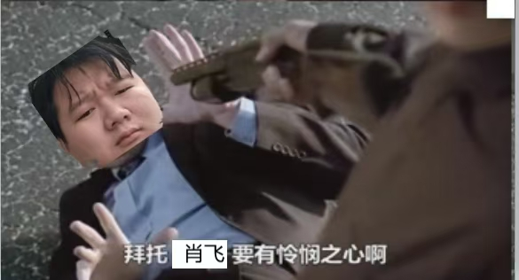
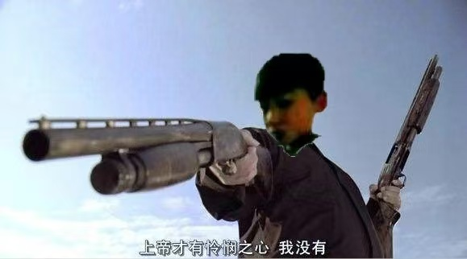
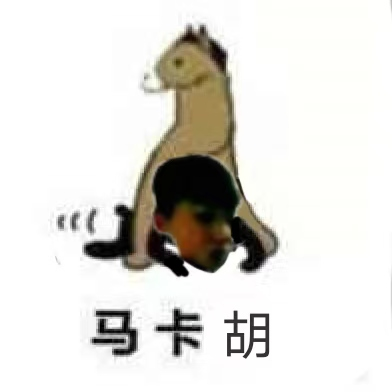

| 请勿洗白
本条目揭露的是胡肖飞的劣迹，但这并不代表与他敌对的王子宸等人是无辜的。谢绝为此类人进行洗白。 |
| 胡肖飞 | |
|---|---|
|
| |
|
姓名 |
胡肖飞 |
|
ID |
(很多，常见的有“雪”“乞丐赚元宝”等) |
|
职业 |
地域黑 |
|
能力 |
滚刀 |
|
硬度 |
5 |
|
智商 |
70 |
|
活跃 |
现已退网 |
|
所属 |
黑界 |
胡肖飞，襄阳的弱智初中生一枚
2019年下半年，胡肖飞和其大哥郭东阳一起在网上瞎骂，南阳人郭东阳天天黑襄阳，而作为襄阳人的胡肖飞却选择帮助郭东阳黑自己的家乡，实属忘恩负义
早期，胡肖飞拥有超级会员的禁言功能，经常靠此来精神胜利，后来会员到期，胡肖飞便开始暴露低能本质——他开始无差别复读其他人的话，对方骂他之后他复制过来改成骂对方的，但是因为其低能本质，经常忘了改导致变成自己骂自己。
该特质被利用后，胡肖飞多次复制别人发的骂他大哥郭东阳的话，导致郭东阳逐渐抛弃了胡肖飞，并且还复制过骂六学流氓的话，导致六学流氓也回骂了胡肖飞
之后，胡肖飞开始更加癫狂，包括说一些文爱的话，或者什么“我大舅是黑社会二舅是警察”“我叫地黄婉儿，地黄婉儿的妈妈死了”之类荒诞不经让人捧腹大笑的怪话，并且胡肖飞还和王子宸展开过菜鸡互啄的“大战”，最后，胡肖飞因为惹到了喷系人而被出道，别人要求他发跳《鸡你太美》的视频来道歉，胡肖飞只发了个跳绳的视频来糊弄，随后退网跑路了
1.没养过茶杯犬吧，你们吃茶杯犬拉的屎
2.我大舅是黑社会老大，二舅是警察局局长
3.我叫地黄婉儿，地黄婉儿的妈妈死了
4.老子的双截棍打的你们满地找牙
5.我要把那个东西插进你的小洞里面

图一郭东阳，图二胡肖飞
